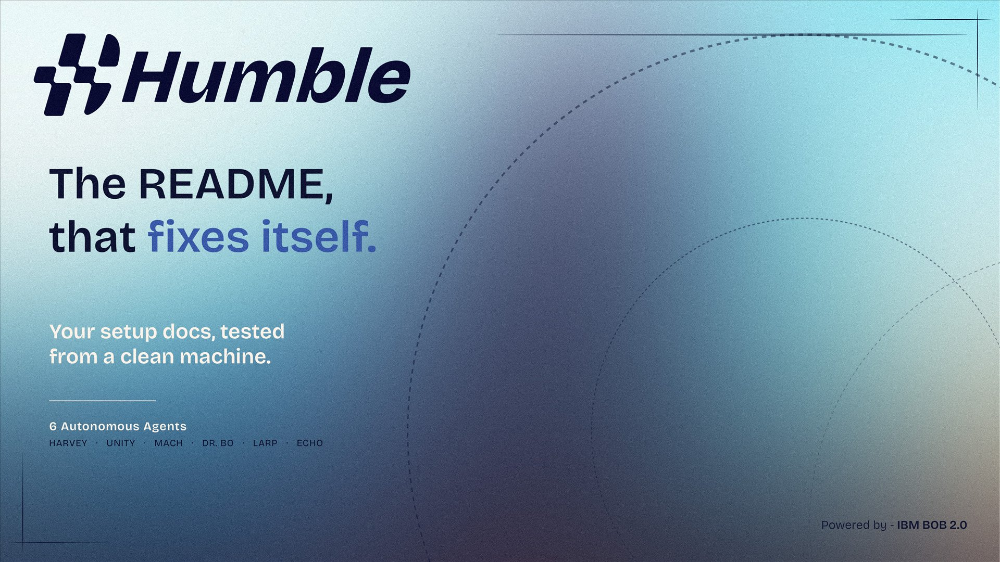
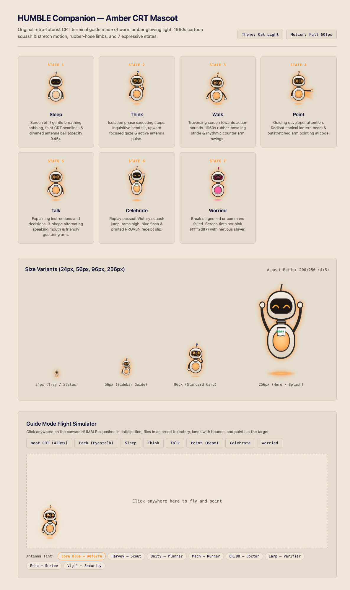

A new hire clones the repo, follows the README, and the first command fails. They debug alone. The maintainer never sees it.
real, popular READMEs broke on a clean machine.
HUMBLE audit v2-31, pinned commits, 27 Sep 2026
4 more breaks found on the way: a missing tool (nodemon), two undocumented services (MongoDB, Redis), a legacy Mongo driver.

ArnavKarmanyateam HUMBLE